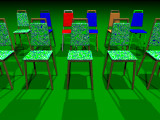

{kind=link}

 Lrchairs is a library module from the Persistence of Vision Ray Tracer (POV-Ray) Object Collection that defines an inexpensive chair. The textures of the frame and seat are set by the user.
The italicized nnnnnn in some of the file names represents the 6-digit number that is in the name of the .zip file.
| Key Files | |
|---|---|
| File | Description |
lrchairs.html |
The user manual (this document) |
lrchairs.inc |
The lrchairs software |
lrchairs.jpg |
Sample output |
lrchairs_example.pov |
An example scene description file |
READMEnnnnnn.html |
Important information about using the POV-Ray Object Collection |
| Other Files | |
| File | Description |
lrchairs.css |
A file used by the user manual |
lrchairs_description.txt |
A brief description of lrchairs |
lrchairs_keywords.txt |
A list of keywords |
lrchairs_prereqs.txt |
Prerequisites (empty file) |
lrchairs_thumbnail.jpg |
An illustration for the user manual |
cc-LGPL-a.png |
Administrative files |
Versionnnnnnn.js |
|
Lrchairs requires POV-Ray 3.5 or later.
All file names in this module and all global and local identifiers defined in lrchairs.inc comply fully with the Object Collection naming standards, as revised August 2008 and proposed August 2012. The prefixes for this module are “lrchairs” and “Cp,” including any uppercase and lowercase variants; to avoid conflicts, do not declare identifiers that start with these prefixes plus an underscore.
Include this file once prior to using any of the features of lrchairs:
#include "lrchairs.inc"
Including the file more than once is harmless, though unnecessary.
Defines a cheap chair. The chair faces the −z direction, and the origin is between the bottom ends of the rear legs. The unit scale of the model is 1 foot (30.48 cm).
Cp_Ftex:
Cp_Stex:
The unit scale of the chair is 1 foot. If your scene uses a different POV unit, you may scale the chair with one of the following values:
| Identifier | Type | Description | Value |
|---|---|---|---|
CP_CM |
float | Use this if your scene’s unit is 1 centimeter. | 30.48 |
CP_FOOT |
float | Included for completeness, you may use this if your scene’s unit is 1 foot. | 1 |
CP_INCH |
float | Use this if your scene’s unit is 1 inch. | 12 |
CP_METER |
float | Use one of these if your scene’s unit is 1 meter. | 0.3048 |
CP_METRE |
|||
CP_YARD |
float | Use this if your scene’s unit is 1 yard. | 1/3 |
Here is an example for a scene with a POV unit of 1 meter:
object
{ Cp_Chair (MyFrameTexture, MySeatTexture)
scale CP_METER
}
As always, remember to scale the chair before translating it to its final location.
The entire artistic credit for this model goes to Mr. Whetstone.
| Version | Date | Notes | Author |
|---|---|---|---|
| 1.0 | 2008 August 21 |
|
Leroy Whetstone |
| 1.0A | 2008 August 21 |
|
Leroy Whetstone |
| 1.1 | 2014 December 31 |
|
Richard Callwood III |